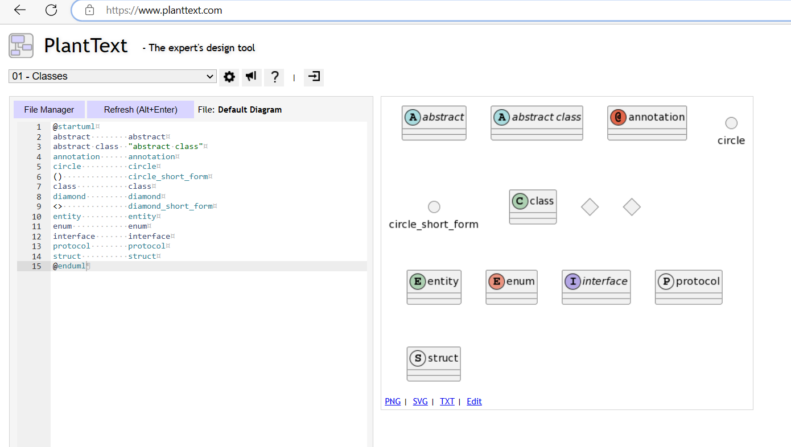

类图
一、简介
1、定义
Class Diagram，直译为 类图。用于描述程序中 类、接口 之间的关系。
2、关系
2.1、依赖（Dependency）
- 定义
若在某个类 A 中使用到类 B，且若没有类 B，类 A 编译会报错，则称 A 与 B 之间有依赖关系。
- 表示
虚线普通箭头

2.2、继承/泛化（Inheritance/Generalization）
- 定义
属于依赖关系的一种特例。
如果类 A 继承（extends）了类 B，则称 A 与 B 间存在泛化关系。
- 表示
实线空心三角箭头。

2.3、实现（Realization）
- 定义
属于依赖关系的一种特例。
如果类 A 实现（implements）了类 B，则称 A 与 B 间存在实现关系。
- 表示
虚线空心三角箭头

2.4、关联（Association）
- 定义
属于依赖关系的一种特例。
如果类 A 与类 B 间有联系。比如类 B 作为类 A 的成员变量，则称 A 与 B 间存在关联关系。
- 表示
实线，普通箭头可选。
如果强调方向，则加一个普通箭头。

2.5、聚合（Aggregation）
- 定义
属于关联关系的一种特例。
如果类 A 与类 B 间可以分离且可以独立存在，则称 A 与 B 间存在聚合关系。
比如：人与衣服，可以分离，则为聚合关系。
- 表示
实线空心菱形箭头

2.6、组合（Composition）
- 定义
属于关联关系的一种特例。
如果类 A 与类 B 间不可以分离，则称 A 与 B 间存在组合关系。
比如：人与人头，不可分离，则为组合关系。
- 表示
实线实心菱形箭头
二、使用 PlantUML 画类图
1.1、关键词
PlantUML 语法所需的关键词
@startuml
abstract abstract
abstract class "abstract class"
annotation annotation
circle circle
() circle_short_form
class class
diamond diamond
<> diamond_short_form
entity entity
enum enum
interface interface
protocol protocol
struct struct
@enduml

1.2、元素之间的符号定义
元素之间的关系是用以下符号定义的。
-- 表示实现
.. 表示虚线
< 表示普通箭头
<| 表示三角箭头
* 表示实心菱形箭头
o 表示空心菱形箭头
使用
关系类型 符号
泛化/继承 <|--
实现 <|..
组合 *--
聚合 o--
关联 <--
依赖 <..
举例：
@startuml
Class01 <|-- Class02
Class03 *-- Class04
Class05 o-- Class06
Class07 .. Class08
Class09 -- Class10
Class13 --> Class14
Class15 ..> Class16
Class17 ..|> Class18
Class19 <--* Class20
@enduml

1.3、文字说明
规则
对于元素，在元素后使用 `"文字"` 来说明
对于关系，在关系结尾使用 `: 文字` 来说明 。可在 文字前后 添加 < 或 > 表示 哪个对象 作用到 哪个对象上。
举例
@startuml
类01 "1" *-- "many" 类02 : 包含
类03 o-- 类04 : 聚合
类05 --> "1" 类06
发动机 - 汽车 : 驱动 >
汽车 *- 轮子 : 拥有 4 >
汽车 -- 人 : < 所属
@enduml
1.4、方法、属性
规则
要声明属性和方法，在 元素 后使用符号 `: 字段或方法的名称`。
可以使用 `{}` 对 方法 或 属性 分组。
举例
@startuml
Object <|-- ArrayList
Object : equals()
ArrayList : Object[] elementData
ArrayList : size()
class Dummy {
String data
void methods()
}
class Flight {
flightNumber : Integer
departureTime : Date
}
@enduml